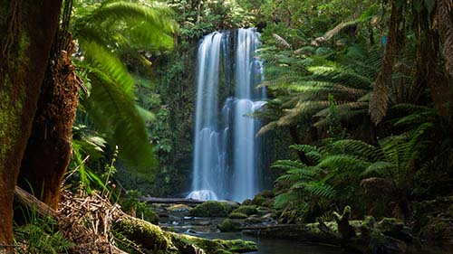

Discover Victoria your own way
NESTLED IN THE VIBRANT LANDSCAPE OF VICTORIA, AUSTRALIA, HIKING ENTHUSIASTS CAN DISCOVER A REALM OF DIVERSE TERRAINS AND BREATHTAKING VISTAS. FROM THE RUGGED COASTLINE OF THE GREAT OCEAN WALK TO THE MAJESTIC PEAKS OF THE GRAMPIANS NATIONAL PARK, VICTORIA OFFERS A MOSAIC OF TRAILS THAT CATER TO ADVENTURERS OF ALL SKILL LEVELS. HIKERS CAN TRAVERSE THROUGH LUSH RAINFORESTS IN THE OTWAYS, WHERE THE AIR IS FRESH AND THE SOUND OF CASCADING WATERFALLS ACCOMPANIES THE RUSTLE OF FERNS AND TOWERING EUCALYPTUS TREES. EACH STEP REVEALS THE STATE'S NATURAL SPLENDOR, WHETHER IT'S THE WILDFLOWERS BLOOMING IN THE ALPINE NATIONAL PARK OR THE DRAMATIC ROCK FORMATIONS DOTTING THE LANDSCAPE OF THE MORNINGTON PENINSULA.
| Hike | Distance | Difficulty | Location |
|---|---|---|---|
| The Great Otway Walk | 63 | Easy | Montseratt - Aireys Inlet |
| Cape Otway Lightstation Track | N/A | Moderate | Cape Otway |
| Sherbrooke Forest Picnic Area Loop | 3.5 | Easy | Sherbrooke Forest |
| Lyrebird Track | 2 | Easy | Sherbrooke Forest |
| Keppel Lookout Track | 2. return | Moderate | Port Campbell National Park |
| The Penington Walk & Lookout | 1.5 return | Easy | The Gables |